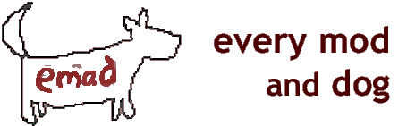

A MOD for Baldur's Gate II: Shadows of Amn
Version 11
Developed
by: Cliffette
Languages: English, German, Russian, French
Supported Games: BGII, BGT, BGII:EE, EET
EMaD Support Forum
EMaD Homepage
Baldur's Gate, Nashkell Carnival: The Great Gazib, embarrassed stoned maidens and Lord Binky the Buffoon.
Baldur's Gate II, Waukeen's Promenade Circus: Kala, depressed ogre maidens, wolfweres, shades and darkness.
Somewhere along the way, we stopped having fun.
Every Mod and Dog (EMaD) is a WeiDU-based mod that adds a selection of small diversions and sidequests to Baldur's Gate II: Shadows of Amn, with the expansion Throne of Bhaal, or to the new Enhanced Edition, or the conversion projects BGT or EET. Its major aim is to recapture some of the more buoyant and adventurous spirit that was found in the original Baldur's Gate.
None of the components included in this mod will interfere directly with the original game's main plot and all quests are optional. Some of the quests were inspired by the various "Iron Modder" competition themes at the Pocket Plane Group.
The following components are included in the current version of this mod:
Originally begun as an attempt to practise Iron modding, this component developed into something rather.. buggy. You meet a woman with a bad hair day and a shocking problem in the Umar Hills wilderness. Help her, and you'll gain a small and quite irritating friend.
The Iron Modder 4 contest revolved around the theme 'A Broken Promise'. This component introduces the lovelorn troll, Tegenk, whose happiness depends on whether or not you can help him keep his promise. You can find Tegenk in the wilderness in the Druid's Grove.
Sometimes it just seems as if the world is against you. You've had a tiff with your lover, your childhood best buddy is festering in a cell and you've just had yet another altercation with a thief/vampire/pirate intent on slitting your throat. Sometimes a Bhaalspawn just needs a healthy dose of unconditional love. This component introduces a stray wolf who seems to like following you around. He's quiet, undemanding, and no toilet-training is required. He can be found hiding in the forests surrounding the Temple Ruins.
Just when you think you've solved all of the romantic problems at the Jermien household in Umar Hills, a new set of problems move in. NB: This quest can only be completed if you haven't already travelled through the Planar Sphere.
So named because the component name "Random Encounters" has already been taken. This component will add a selection of characters to the game so that your Bhaalspawn will have even more strangers to chat with (or threaten/main/kill as the case may be). The experience/items gained from these quests are so miniscule/useless that the encounters not listed as separate quests. But hopefully they capture the feeling of some of the more bizarre episodes in the original Baldur's Gate. Think of The Great Gazib, and you'll know what I'm talking about.
** WARNING ** If you are a Forgotten Realms purist who is concerned with the upkeep of all things canon, then it's more than likely that this mod will offend your sense of what is a possibility and what is not in the FR universe. While the fourth wall is never broken, some laws of FR existence might be. Play at your own risk!
Download the latest version here.
Windows
The mod is packaged and installed with WeiDU and is distributed as a self-extracting archive. To install, simply double-click the archive and follow the instructions on screen.Alternatively the files can be extracted from the archive using WinRAR. If properly extracted, you should have a emad folder and setup-emad.exe in your BG2 folder. To install, simply double-click setup-emad.exe and follow the instructions on screen.
Please run setup-emad.exe in your BG2 folder to reinstall, uninstall or otherwise change components.
Mac OS X
If the mod was previously installed, uninstall it before extracting the new version. The BG2 Fixpack is packaged and installed with WeiDU. To install, simply extract the contents of the mod into your BG2 folder. If properly extracted, you should have a emad folder, setup-emad, and setup-emad.command in your BG2 folder. To install, simply double-click Setup-emad.command and follow the instructions on screen.Linux
Download the latest version of WeiDU for Linux from here and extract (at least) the WeiDU, weinstall and tolower executables in a $PATH directory (E.G. /usr/bin). Following that, open a terminal, cd to your BG2 installation directory, run `tolower' and answer Y to both queries.You can avoid running the second option (linux.ini) if you've already ran it once in the same directory. To save time, the archive is already tolowered, so there's no need to run the first option (lowercasing file names) either if you've extracted only this mod since the last time you lower cased file name. If you're unsure, running tolower and choosing both options is the safe bet.
After that, run 'weinstall emad from your game installation directory to install or uninstall the mod.
To uninstall, double-click the setup-emad.exe (or setup-emad for OS X) file and enter the given commands for Uninstallation. Afterwards, you may delete the following files:
- setup-emad.tp2
- setup-emad.debug
- setup-emad.exe/setup-emad
- Setup-emad.command
- and the contents of the "emad" subfolder
EMaD should be compatible with all other WeiDU mods, although conflicts are always a possibility. If you discover a conflict, please report it at the EMaD support forum (link above).
If you find a bug, please visit the EMaD support forum (link above) and post the details of your bug there. Complaints and comments may be directed to the forum as well.
Finding the extra characters/quests.
I'd highly recommend just playing through the game and bumping into the characters as you go. Most of them are designed so that they'll walk up to you when they see you, or have such improbable colour schemes that you can't help but notice them. However...
Component Character - District - [X.Y] A Z-rated Adventure
Rizza - Umar Hills - [3983.1106]
The Promise of a Troll
Tegenk - Druid grove wilderness - [718.1430]
Cerese - Trademeet - [1415.2740]A Bhaalspawn's Best Friend
Moxen - Umar Inn
Wolf - Temple Ruins - [3022.1795] (after speaking to Moxen)Under Her Spell
Dorc - Umar Hills, outside Jermien's home - [4290.2049] (after finishing Jermien's quest)
Joaen - Inside Jermien's HomeCharacter Medley
Beyra - Slums - [270.2262]
The Magnificent Clady - Slums - [2931.1317]
Lord Jumpalota - Government District - [3044.3417]
Nua Nein - Government District - [2577.2289]Random hints/help.
A Bhaalspawn's Best Friend: After the wolf has shown his true nature (the latest he will do this is when you reach Brynnlaw), he will leave unless you are a ranger or your charisma is > 16. There is no other way to keep him.
EMaD and the ideas within are the evil brainchildren of cliffette. Don't say the mod is yours (also, why would you want to?) and we'll all be happy.
BALDUR'S GATE II: SHADOWS OF AMN, BALDUR'S GATE II: THRONE OF BHAAL: © 2000, 2001 Bioware Corp. All Rights Reserved.
EMaD is not developed, supported, or endorsed by BioWare or Interplay/Black Isle.
All images and contents of this mod are copyright BioWare, Interplay/Black Isle or Wizards of the Coast, except for the ones (usually inventory icons/description images) that were made by cliffette.REDISTRIBUTION NOTE: EMaD was created to be freely enjoyed by all Baldur's Gate II: Shadows of Amn gamers, except those who wish to donate copious amounts of money to cliffette. EMaD may not be sold (despite my best efforts), published, compiled or redistributed in any form without the consent of its author.
Writing - cliffette
Coding - cliffette
Items/art - cliffette
Bugs - someone elseThanks go to the team at the PPG, who taught me everything I know about modding. And thanks go to Icelus, because I pinched his UB template for this readme :). Extra thanks go to jcompton, for his Iron Modding contests and enormous contribution to the modding community (mainly in the form of relentless pinging of IE tool authors, no matter what he says).
Below are links to community-related sites:
The Pocket Plane Group
The Gibberlings Three
(The wonderful) Infinity Engine Structures Description Project
(The equally wonderful) Near Infinity
We('re not worthy!)iDU
It's my readme and I can plug who I want to.
Version 1 - Initial release
ADDITIONS
- A Z-rated Adventure
- The Promise of a Troll
- A Bhaalspawn's Best Friend
CHANGES
- A Z-rated Adventure, formerly known as Cliffette's IM4 non-entry, has now been made less rudimentary.
BUGFIXES
- A Z-rated Adventure's inventory icons have been fixed and now display correctly.
Version 2 - Quick update
ADDITIONS
- Character Medley component (Beyra and Clady).
CHANGES
- Installation procedure has now been updated to use .bat files rather than .exe.
- A Bhaalspawn's Best Friend: Moxen now has a better fighting script. Minor tweaks. Spoilerfix: Wolf now morphs just before dying.
- Spoiler section added to readme.
BUGFIXES
- None
Version 3
ADDITIONS
- Under Her Spell
- Character Medley component (Lord Jumpalota and Nua Nein)
CHANGES
- Name of mod changed to EMaD.
- Reverted back to standard WeiDU installation.
- Readme appearance changed.
- Z-rated adventure: The search for the hive is now like a hotter/colder game, thanks to Dirk Gently's feedback.
- Minor dialogue changes (typos, Tegenk's dialogue is now less mawkish, etc).
BUGFIXES
- Tegenk's ring now only changes the player's colouring instead of polymorphing the player into a troll.
- The wolf now spawns on the correct map, depending on whether you have defeated the Shade Lord (oops)
Version 4
ADDITIONS
- Added VERSION-flag.
CHANGES
- Updated to WeiDU v210.
BUGFIXES
- The wolf still caused a CTD before you defeated the Shade Lord.
Version 5
CHANGES
- Updated to WeiDU v213.
BUGFIXES
- Removed setup.bat.
Version 6
CHANGES
- Changed to README command.
- Updated to WeiDU v217.
BUGFIXES
- Lollorian's EMaD, CtB and MunchMod compatibility fix - Tegenk/cromappend.baf
Version 7
CHANGES
- Updated to WeiDU v231.
BUGFIXES
- Cerese's spawning in The Promise of a Troll could break the quest and/or crash the game
- The cut scene to return with Cerese to the Grove no longr hangs
Version 8
CHANGES
- Now compatible with BG2EE
- Fully tra-ified for easier translation
BUGFIXES
- Removed an unfiished quest (Forgery) from the install options
Version 9
CHANGES
- Added German translation; thanks to Leonardo Watson
- As part of the new German translation, Leo also fully tra-ified the mod for future translations. Thanks again!
Version 10
CHANGES
Added Russian translation; thanks to Austin
- Updated Readme
Version 11
CHANGES
- Added French translation; thanks to Deratiseur
- Updated Readme
- Added French Readme
- added folder libiconv-1.9.2-1-src.7z with iconv licence info
- Integrated BWP-Fixes: Lollorian's non-permanent Level Drain and 100% wild surges from Troll's Whisper ring